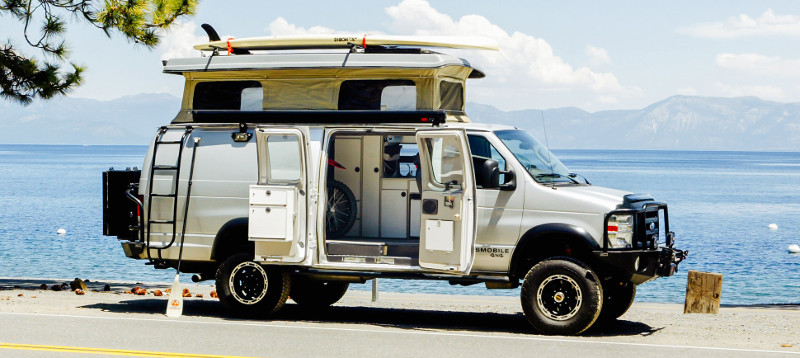
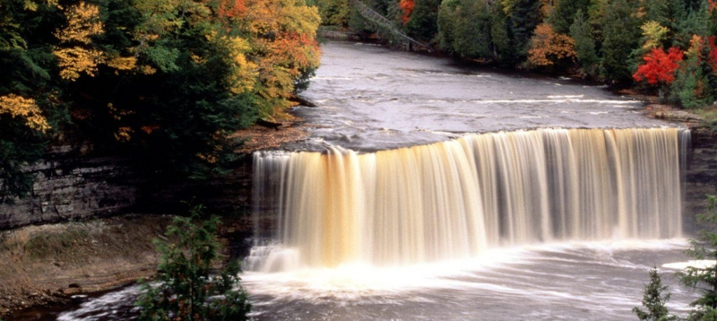

Surviving your campervan adventure
Living in a campervan is either your idea of heaven or your idea of hell. If you’re on the heaven side of the camp you’ll be thinking about the freedom to go wherever you want, whenever you want. You’ll be imagining camping on beaches and gathering around a campfire while drinking beers under the stars. If living in a campervan would be your idea of hell then you’re probably thinking of the cramped spaces, having to make a bathroom out of a bush and the many, many hours driving. And when The Boy and I drove around Australia in our campervan, there was A LOT of driving! Living in a campervan was by far the best experience of my life but there were times when it wasn’t easy. After a whole year of it, my boyfriend and I came up with a few tips to make it easier:
Embrace minimalism…then take it a step further
To say there was very little room inside the campervan is the understatement of the century. I’ve always wanted to live with just the clothes on my back but if you do that in the real world, well, you’d be a tramp. Backpacking is probably the only exception.
In some ways it was liberating to have so little and to never wake up thinking ‘I wonder what I should wear today…’
Make friends with someone who has a better van than you
It doesn’t matter how good your campervan is, there’s always someone with a bigger and better one. Our van was a battered old VW with a mattress and a cupboard so it wasn’t difficult for us to find friends who met this criteria. People generally stick to similar routes when they’re backpacking so it’s easy enough to stick together.
We made friends with a group of guys who had that luxury item all backpackers want – a fridge. And what does a fridge mean? Cold beer. It was a very good friendship choice.
What to do when it rains
Living in a campervan leads to a very outdoorsy lifestyle because it’s not like you can kickback in the living room to play computer games (unless you’re in one of those fancy pants campers like on Meet the Fockers). When it rains you’re left with very few options that don’t involve spending a fortune.
Of course you can go to a shopping mall, out for food, the cinema or bowling but this isn’t good for a backpacker’s budget.
We eventually came up with a weird but entertaining solution – go to the pet store.
In the US and Australia, pet stores aren’t like the ones in the UK that just have food and fish, these ones have kittens and puppies! Yes, you look like a complete weirdo (especially when you’re travelling with four guys in their late 20’s) but, you have to admit, it’s a great way to spend a rainy afternoon without spending a penny.
Always put your food in sealed containers
We learnt this lesson the hard way and had a little mouse join us for part of the journey. I dread to think how long I was sharing my muesli with Stuart Little. We spent a few nights listening to him scurry around the roof space of the van before we finally caught him (and then realised how small and cute he was and felt terrible!)
Make sure you have air-con and the money to pay for it
We bought our campervan based on the fact it had ‘Icy Cold Air-Con’ and when I say icy cold, I actually mean arctic standards that could lead to frost bite. It was delightful!
The only problem was than you could see the fuel gauge drop when the A/C was switched on. We had a few weeks when we were driving to a new job but had so little money that we had to turn it off and drive with wet towels hanging from the windows and around our necks. I honestly thought I was going to melt.
Stay in campsites whenever possible
The thought of camping on the beach is all very romantic and it’s great for one or two nights a week but it won’t be long before you miss toilets, hot showers, cooking facilities and the company of other people.
One the west coast of Australia it was easy to go days without seeing anyone except in petrol stations so it’s good to get to a campsite where can chat to the locals and other travellers going in the opposite direction for some advice and insider’s tips.
But even as I’m writing this I can’t help but laugh. I think I’ll still be laughing at some of the stupid things that happened when I’m in my 80’s and I’ll know that it was all worth it and that it was the best year of my life.
Most breathtaking waterfalls
“If there is magic on the planet, it is contained in water,” said famed American anthropologist, Loren Eiseley. No matter where in the world you are, you don’t have to venture very far to experience the magic of our planet’s most spectacular waterfalls. Many of these stunning falls are sprinkled throughout the world’s most striking destinations, adding even greater magic, mystery and magnificence to these natural wonders. From the plunging rapids in Hawaii and Iceland, to the horsetail drops in Chile, these impressive watercourses are fittingly considered to be among the more exotic waterfalls of distant lands. Whether you’re planning a week-long vacation, an afternoon of hiking, or you’re simply passing by, be sure to set aside some time to explore these hidden gems and 10 of the most breathtaking waterfalls in the world.
Victoria Falls in Zimbabwe
The Victoria Falls or Mosi-oa-Tunya is a gorgeous waterfall, located on the Zambia and Zimbabwe border. The water of Zambezi river falls down in a straight line for 354 ft (108 m). It is wide ( 5,604 ft/1,708 m), therefore water spray raises very high and can be spotted from many kilometers away.
Iguazu Falls in Argentina
Iguazu Falls are found on the border of Brazil and Argentina. Not very high (285 ft/87 m), but very impressive: it has 275 cascades, that form a horseshoe and stretch for 8858ft (2700 m).
Angel Falls in Venezuela
Angel Falls is the highest in the world, which falls down uninterrupted for 3,212 ft (979 m). You can visit it in Canaima National Park, which is protected by UNESCO. It is named after its discoverer US aviator Jimmie Angel.
Kaieteur Falls in Guyana
Kaieteur Falls is found in Guyana. Water falls for 741 ft (226 m), then it reaches the first of the many steep cascades. It attracts many tourists, who like extreme trips, since the fall is in the middle of a wilderness with no urban amenities.
Niagara Falls in USA/Canada
Niagara Falls is probably the most famous in the world. It marks US and Canada border. Niagara is formed of two sections – the Horseshoe Falls on the Canadian side and the American Falls on the American side – that are separated by an island. The Horseshoe Falls are more impressive: water here drops 173 ft (53 m), while the American Falls drop only 70–100 ft (21–30 m).
Gullfoss (Golden Falls) in Iceland
Gullfoss is a magnificent waterfall located in southwest Iceland. Not particularly high (two 36 ft/11 m and 68 ft/21 m plunges), however, it is very beautiful. Due to a crevice, the river Hvítá seems to disappear into the abyss.
Plitvice Falls in Croatia
Plitvice Falls are found in Plitvice Lakes National Park, Croatia. They are not very high falls, but are stunning due to the many cascades water has to overcome. There are hundreds of waterfalls. The color of water varies from from crystal clear to azure, to turquoise.
Yosemite Falls in USA
Yosemite Falls is the highest waterfall in North America. It drops 2,425 ft (739 m) in the Sierra Nevada, California. The source of water is melting snow, therefore sometimes the stream may cease due to a little amount of snow.
Sutherland Falls in New Zealand
Sutherland Falls are located in Fiordland, New Zealand. With its 1902 ft (580 m) plunge it is one of the tallest waterfall in the world. It falls in three cascades, that create this unique landscape. It was named after its discoverer Donald Sutherland in 1880.
Nohkalikai Falls in India
Nohkalikai Falls is found in India. Water falls down for 1100 ft (335 m). Although the feeding stream is only 1,5 mi (2 km) long, Nohkalikai is still very impressive. A pool is formed below the fall, in which water receives green color.
Awe inspiring rainforest adventures

Visiting the Cuyabeno Wildlife Reserve, a 250,000-acre rainforest in Ecuador, means trekking around 13 lagoons, spotting 60 kinds of orchids and seeing anacondas wrapped around thick tree branches. Take a canoe trip down the river in the heart of the forest, and you’ll see pink dolphins swimming alongside your boat. Cuyabeno is just one of several must-visit rainforests around the world that promise travelers adventure and the chance to get up close with unique wildlife in lush surroundings.
Rainforests see more than 50 inches of rain a year. There are close to 4 million square miles of rainforest in the world, according to the Rainforest Alliance, an organization based in New York City, which works to conserve the biodiversity in rainforests. The majority of them, such as the Amazon, which is the largest on the planet, are concentrated in Latin America; but others, such as the Congo Basin, the world’s second-largest rainforest, are found in Africa and parts of Asia.
Many are ripe for exploration by active travelers.
“Really, the best way to experience a rainforest is to hike through it. That could mean trekking through dense jungle or following well-marked trails,” says Diane Jukofsky, director of communications, marketing and education at the Rainforest Alliance. “This gives visitors a chance to really absorb the scenery and see the wildlife, plants and flowers that make the rainforest special.”
But experts say it’s not the best idea to venture through a rainforest on your own.
“These environments have challenges, so it’s a good idea to hire a guide or go with a tour company specializing in back-country adventures,” says Margaret Kelly, a travel editor atFodor’s, the travel-guide series.
The biggest danger in attempting to explore a rainforest without a knowledgeable guide is getting lost in the jungle, but experts also say that not knowing where to look for certain wildlife is another major reason to not go solo.
If you visit the Monteverde Cloud Forest in Costa Rica, for example, a guide can help search for the emerald-green Quetzal, a rare bird that often hides among the towering strangler fig trees there. The Quetzal is one of 400 kinds of birds in this rainforest, which is located 7,500 feet above sea level and has cooler temperatures than traditional rainforests due to its high altitude. Other wildlife here includes 100 species of mammals, including jaguars and howler monkeys. In addition to hiking the 17 miles of trails here, visitors can take ATV tours, walk on bridges suspended between trees, ride down zip lines and even tour a coffee plantation inside the forest.
Memorable Costa Rica, a travel company which creates bespoke trips in Costa Rica, offers customized visits to this tropical rainforest, which include accommodations, meals and daily touring.
If you want to experience a piece of history during your rainforest vacation, head to the 460-square-mile Khao Sok National Park in Thailand. It is 160 million years old and said to be the oldest rainforest on Earth.
As travelers here trek through the forest by foot or on an elephant, they will see flora such as fig, banana and coconut palm trees, and abundant wildlife, including cloud leopards, barking deer and Kingfisher birds. Jeep safaris and canoe trips down the rainforest’s many streams are also available.
North American travelers don’t need to go to far-flung locales to experience a rainforest. British Columbia in Canada boasts the Great Bear Rainforest, a 25,000-square-mile swath of land situated along the Pacific Coast. The forest is known for its 200-foot-tall spruce and red cedar trees and for diverse species, including Kermode and grizzly bears, bald eagles, cougars and wolves. In addition to hiking and fishing for salmon in the ocean, visitors can see totem poles and other 1,000-year-old remains of the First Nations people who used to inhabit this area.
You’ll find thrills on such trips, but don’t expect to find 300-thread-count sheets. Experts warn that even the best rainforest accommodations don’t typically meet the standards of luxury.
“Many lodges in rainforests won’t have air conditioning or gourmet meals,” says Emmanuel Burgio, founder of Blue Parallel, which plans upscale customized tours of South America, including treks to area rainforests. “The deeper you get into the rainforest, which is where you can really see the wildlife, the less luxe it gets.”
For example, the Acajatuba Jungle Lodge, which is a three-hour boat trip from Manaus, the main city in the Amazon, has 40 rustic rooms without air conditioning and has electricity only for a few hours in the evening.
Though Blue Parallel’s trips to the rainforests in South America cost roughly $1,000 per person per day–because clients fly around by private plane and the company adds extra touches, such as providing guests with their favorite wine–the priciest part of a rainforest vacation is normally the airfare. Lodges and meals are usually under $300 a night, and prices for guided trekking or boating trips are generally under a $100 per person per day.
Good prices, the promise of true adventure and wildlife that few in the industrial world have ever had the chance to see: Rainforest vacations offer this and more.